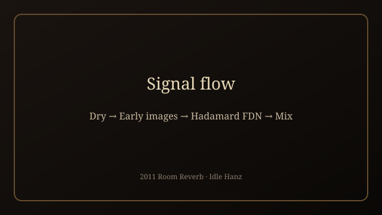
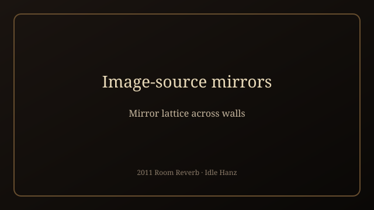
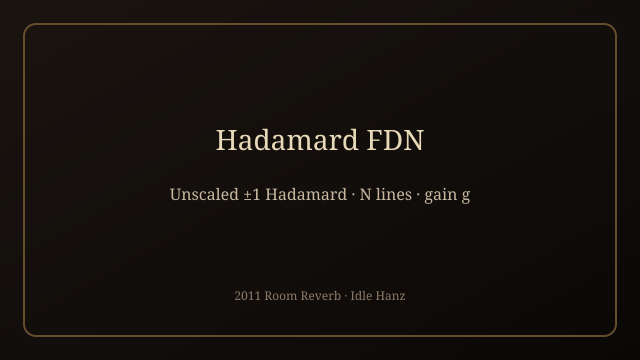
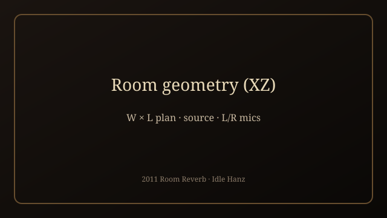

2011 Room Reverb
Image sources · unscaled Hadamard FDN · mic desk
A rebuild of the 2011 Reaktor room reverb: geometric early reflections, an unscaled Hadamard feedback delay network for the tail, and a mic-array model with desk presets — edited in a local Desktop app.
This is a local Python app (FastAPI), not an in-browser tool.
Download or clone the pack, run it on your machine, then open
http://127.0.0.1:7860.
It is a research rebuild: docs mark VERIFIED (from Structure)
vs ASSUMED. Not a finished commercial plugin.
Quick start (Windows)
- Install Python 3 (tick “Add to PATH”).
- Unzip the pack → open
software(or use the pack-root CLICK ME shortcut). - Double-click
Launch Tweak App.bat(first run creates.venv). - Browser →
http://127.0.0.1:7860. - Place source / mics, load a dry WAV, Render →
software/renders/out.wav.
Diagrams




What’s in the pack
software/— FastAPI tweak app, UI, enginedocs/— quick start, how-it-works, diagramsfindings/— Structure mining notesensemble/— original Reaktor.ens(reference)